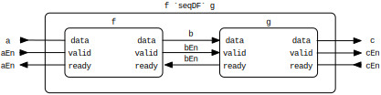
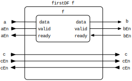
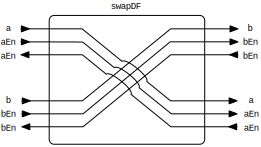
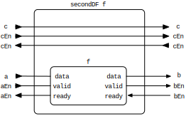
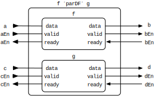
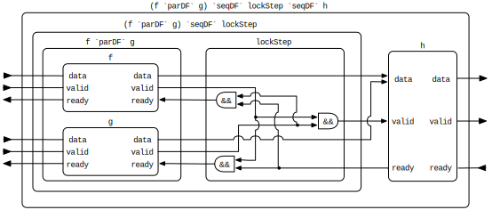
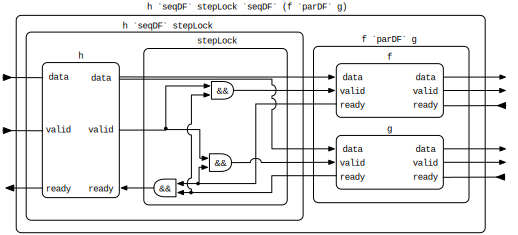

| Copyright | (C) 2013-2016 University of Twente |
|---|---|
| License | BSD2 (see the file LICENSE) |
| Maintainer | Christiaan Baaij <christiaan.baaij@gmail.com> |
| Safe Haskell | Trustworthy |
| Language | Haskell2010 |
| Extensions |
|
CLaSH.Prelude.DataFlow
Description
Self-synchronising circuits based on data-flow principles.
- type DataFlow iEn oEn i o = DataFlow' SystemClock iEn oEn i o
- newtype DataFlow' clk iEn oEn i o = DF {}
- liftDF :: (Signal' clk i -> Signal' clk Bool -> Signal' clk Bool -> (Signal' clk o, Signal' clk Bool, Signal' clk Bool)) -> DataFlow' clk Bool Bool i o
- pureDF :: (i -> o) -> DataFlow' clk Bool Bool i o
- mealyDF :: (KnownSymbol nm, KnownNat rate) => (s -> i -> (s, o)) -> s -> DataFlow' (Clk nm rate) Bool Bool i o
- mooreDF :: (KnownSymbol nm, KnownNat rate) => (s -> i -> s) -> (s -> o) -> s -> DataFlow' (Clk nm rate) Bool Bool i o
- fifoDF :: forall addrSize m n a nm rate. (KnownNat addrSize, KnownNat n, KnownNat m, (m + n) ~ (2 ^ addrSize), KnownSymbol nm, KnownNat rate) => SNat (m + n) -> Vec m a -> DataFlow' (Clk nm rate) Bool Bool a a
- idDF :: DataFlow' clk en en a a
- seqDF :: DataFlow' clk aEn bEn a b -> DataFlow' clk bEn cEn b c -> DataFlow' clk aEn cEn a c
- firstDF :: DataFlow' clk aEn bEn a b -> DataFlow' clk (aEn, cEn) (bEn, cEn) (a, c) (b, c)
- swapDF :: DataFlow' clk (aEn, bEn) (bEn, aEn) (a, b) (b, a)
- secondDF :: DataFlow' clk aEn bEn a b -> DataFlow' clk (cEn, aEn) (cEn, bEn) (c, a) (c, b)
- parDF :: DataFlow' clk aEn bEn a b -> DataFlow' clk cEn dEn c d -> DataFlow' clk (aEn, cEn) (bEn, dEn) (a, c) (b, d)
- parNDF :: KnownNat n => Vec n (DataFlow' clk aEn bEn a b) -> DataFlow' clk (Vec n aEn) (Vec n bEn) (Vec n a) (Vec n b)
- loopDF :: (KnownNat m, KnownNat n, KnownNat addrSize, KnownNat rate, KnownSymbol nm, (m + n) ~ (2 ^ addrSize)) => SNat (m + n) -> Vec m d -> DataFlow' (Clk nm rate) (Bool, Bool) (Bool, Bool) (a, d) (b, d) -> DataFlow' (Clk nm rate) Bool Bool a b
- loopDF_nobuf :: DataFlow' clk (Bool, Bool) (Bool, Bool) (a, d) (b, d) -> DataFlow' clk Bool Bool a b
- class LockStep a b where
Data types
type DataFlow iEn oEn i o = DataFlow' SystemClock iEn oEn i o #
Dataflow circuit synchronised to the SystemClock.
newtype DataFlow' clk iEn oEn i o #
Dataflow circuit with bidirectional synchronisation channels.
In the forward direction we assert validity of the data. In the backward
direction we assert that the circuit is ready to receive new data. A circuit
adhering to the DataFlow type should:
- Not consume data when validity is deasserted.
- Only update its output when readiness is asserted.
The DataFlow' type is defined as:
newtype DataFlow' clk iEn oEn i o
= DF
{ df :: Signal' clk i -- Incoming data
-> Signal' clk iEn -- Flagged with valid bits iEn.
-> Signal' clk oEn -- Incoming back-pressure, ready edge.
-> ( Signal' clk o -- Outgoing data.
, Signal' clk oEn -- Flagged with valid bits oEn.
, Signal' clk iEn -- Outgoing back-pressure, ready edge.
)
}
where:
clkis the clock to which the circuit is synchronised.iEnis the type of the bidirectional incoming synchronisation channel.oEnis the type of the bidirectional outgoing synchronisation channel.iis the incoming data type.ois the outgoing data type.
We define several composition operators for our DataFlow circuits:
seqDFsequential composition.parDFparallel composition.loopDFadd a feedback arc.lockStepproceed in lock-step.
When you look at the types of the above operators it becomes clear why we parametrise in the types of the synchronisation channels.
Creating DataFlow circuits
liftDF :: (Signal' clk i -> Signal' clk Bool -> Signal' clk Bool -> (Signal' clk o, Signal' clk Bool, Signal' clk Bool)) -> DataFlow' clk Bool Bool i o #
Create a DataFlow circuit from a circuit description with the appropriate
type:
Signal'clk i -- Incoming data. ->Signal'clk Bool -- Flagged with a single valid bit. ->Signal'clk Bool -- Incoming back-pressure, ready bit. -> (Signal'clk o -- Outgoing data. ,Signal'clk oEn -- Flagged with a single valid bit. ,Signal'clk iEn -- Outgoing back-pressure, ready bit. )
A circuit adhering to the DataFlow type should:
- Not consume data when validity is deasserted.
- Only update its output when readiness is asserted.
pureDF :: (i -> o) -> DataFlow' clk Bool Bool i o #
Create a DataFlow circuit where the given function f operates on the
data, and the synchronisation channels are passed unaltered.
mealyDF :: (KnownSymbol nm, KnownNat rate) => (s -> i -> (s, o)) -> s -> DataFlow' (Clk nm rate) Bool Bool i o #
Create a DataFlow circuit from a Mealy machine description as those of
CLaSH.Prelude.Mealy
mooreDF :: (KnownSymbol nm, KnownNat rate) => (s -> i -> s) -> (s -> o) -> s -> DataFlow' (Clk nm rate) Bool Bool i o #
Create a DataFlow circuit from a Moore machine description as those of
CLaSH.Prelude.Moore
Arguments
| :: (KnownNat addrSize, KnownNat n, KnownNat m, (m + n) ~ (2 ^ addrSize), KnownSymbol nm, KnownNat rate) | |
| => SNat (m + n) | Depth of the FIFO buffer. Must be a power of two. |
| -> Vec m a | Initial content. Can be smaller than the size of the
FIFO. Empty spaces are initialised with |
| -> DataFlow' (Clk nm rate) Bool Bool a a |
Composition combinators
seqDF :: DataFlow' clk aEn bEn a b -> DataFlow' clk bEn cEn b c -> DataFlow' clk aEn cEn a c #
Sequential composition of two DataFlow circuits.

firstDF :: DataFlow' clk aEn bEn a b -> DataFlow' clk (aEn, cEn) (bEn, cEn) (a, c) (b, c) #
Apply the circuit to the first halve of the communication channels, leave the second halve unchanged.

swapDF :: DataFlow' clk (aEn, bEn) (bEn, aEn) (a, b) (b, a) #
Swap the two communication channels.

secondDF :: DataFlow' clk aEn bEn a b -> DataFlow' clk (cEn, aEn) (cEn, bEn) (c, a) (c, b) #
Apply the circuit to the second halve of the communication channels, leave the first halve unchanged.

parDF :: DataFlow' clk aEn bEn a b -> DataFlow' clk cEn dEn c d -> DataFlow' clk (aEn, cEn) (bEn, dEn) (a, c) (b, d) #
Compose two DataFlow circuits in parallel.

parNDF :: KnownNat n => Vec n (DataFlow' clk aEn bEn a b) -> DataFlow' clk (Vec n aEn) (Vec n bEn) (Vec n a) (Vec n b) #
Compose n DataFlow circuits in parallel.
Arguments
| :: (KnownNat m, KnownNat n, KnownNat addrSize, KnownNat rate, KnownSymbol nm, (m + n) ~ (2 ^ addrSize)) | |
| => SNat (m + n) | Depth of the FIFO buffer. Must be a power of two |
| -> Vec m d | Initial content of the FIFO buffer. Can be smaller than
the size of the FIFO. Empty spaces are initialised with
|
| -> DataFlow' (Clk nm rate) (Bool, Bool) (Bool, Bool) (a, d) (b, d) | |
| -> DataFlow' (Clk nm rate) Bool Bool a b |
Feed back the second halve of the communication channel. The feedback loop
is buffered by a fifoDF circuit.
So given a circuit h with two synchronisation channels:
h :: DataFlow (Bool,Bool) (Bool,Bool) (a,d) (b,d)
Feeding back the d part (including its synchronisation channels) results in:
loopDF d4 Nil h
When you have a circuit h', with only a single synchronisation channel:
h' :: DataFlow Bool Bool (a,d) (b,d)
and you want to compose h' in a feedback loop, the following will not work:
f `` (seqDFloopDFd4 Nil h') `` gseqDF
The circuits f, h, and g, must operate in lock-step because the h'
circuit only has a single synchronisation channel. Consequently, there
should only be progress when all three circuits are producing valid data
and all three circuits are ready to receive new data. We need to compose
h' with the lockStep and stepLock functions to achieve the lock-step
operation.
f `` (seqDFlockStep``seqDFloopDFd4 Nil h' ``seqDFstepLock) `` gseqDF
loopDF_nobuf :: DataFlow' clk (Bool, Bool) (Bool, Bool) (a, d) (b, d) -> DataFlow' clk Bool Bool a b #
Feed back the second halve of the communication channel. Unlike loopDF,
the feedback loop is not buffered.
Lock-Step operation
Reduce or extend the synchronisation granularity of parallel compositions.
Methods
lockStep :: DataFlow' clk a Bool b b #
Reduce the synchronisation granularity to a single Boolean value.
Given:
f ::DataFlowBool Bool a b g ::DataFlowBool Bool c d h ::DataFlowBool Bool (b,d) (p,q)
We cannot simply write:
(f `` g) `parDF` hseqDF
because, f `parDF` g, has type, DataFlow (Bool,Bool) (Bool,Bool) (a,c) (b,d)h. We
need a circuit in between that has the type:
DataFlow (Bool,Bool) Bool (b,d) (b,d)
Simply &&-ing the valid signals in the forward direction, and
duplicating the ready signal in the backward direction is however not
enough. We also need to make sure that f does not update its output when
g's output is invalid and visa versa, as h can only consume its input
when both f and g are producing valid data. g's ready port is hence
only asserted when h is ready and f is producing valid data. And f's
ready port is only asserted when h is ready and g is producing valid
data. f and g will hence be proceeding in lock-step.
The lockStep function ensures that all synchronisation signals are
properly connected:
(f `` g) `parDF`seqDFlockStep`` hseqDF

Note 1: ensure that the components that you are synchronising have
buffered/delayed ready and valid signals, or lockStep has the
potential to introduce combinational loops. You can do this by placing
fifoDFs on the parallel channels. Extending the above example, you would
write:
((f ``seqDFfifoDFd4 Nil) `` (g `parDF`seqDFfifoDFd4 Nil)) ``seqDFlockStep`` hseqDF
Note 2: lockStep works for arbitrarily nested tuples. That is:
p ::DataFlowBool Bool ((b,d),d) z q ::DataFlow((Bool,Bool),Bool) ((Bool,Bool),Bool) ((a,c),c) ((b,d),d) q = f `` g `parDF` g r = q `parDF`seqDFlockStep`` pseqDF
Does the right thing.
stepLock :: DataFlow' clk Bool a b b #
Extend the synchronisation granularity from a single Boolean value.
Given:
f ::DataFlowBool Bool a b g ::DataFlowBool Bool c d h ::DataFlowBool Bool (p,q) (a,c)
We cannot simply write:
h `` (f `seqDF` g)parDF
because, f `parDF` g, has type, DataFlow (Bool,Bool) (Bool,Bool) (a,c) (b,d)h. We
need a circuit in between that has the type:
DataFlow Bool (Bool,Bool) (a,c) (a,c)
Simply &&-ing the ready signals in the backward direction, and
duplicating the valid signal in the forward direction is however not
enough. We need to make sure that f does not consume values when g is
not ready and visa versa, because h cannot update the values of its
output tuple independently. f's valid port is hence only asserted when
h is valid and g is ready to receive new values. g's valid port is
only asserted when h is valid and f is ready to receive new values.
f and g will hence be proceeding in lock-step.
The stepLock function ensures that all synchronisation signals are
properly connected:
h ``seqDFstepLock`` (f `seqDF` g)parDF

Note 1: ensure that the components that you are synchronising have
buffered/delayed ready and valid signals, or stepLock has the
potential to introduce combinational loops. You can do this by placing
fifoDFs on the parallel channels. Extending the above example, you would
write:
h ``seqDFstepLock`` ((seqDFfifoDFd4 Nil `` f) `seqDF` (parDFfifoDFd4 Nil `` g))seqDF
Note 2: stepLock works for arbitrarily nested tuples. That is:
p ::DataFlowBool Bool z ((a,c),c) q ::DataFlow((Bool,Bool),Bool) ((Bool,Bool),Bool) ((a,c),c) ((b,d),d) q = f `` g `parDF` g r = p `parDF`seqDFstepLock`` qseqDF
Does the right thing.